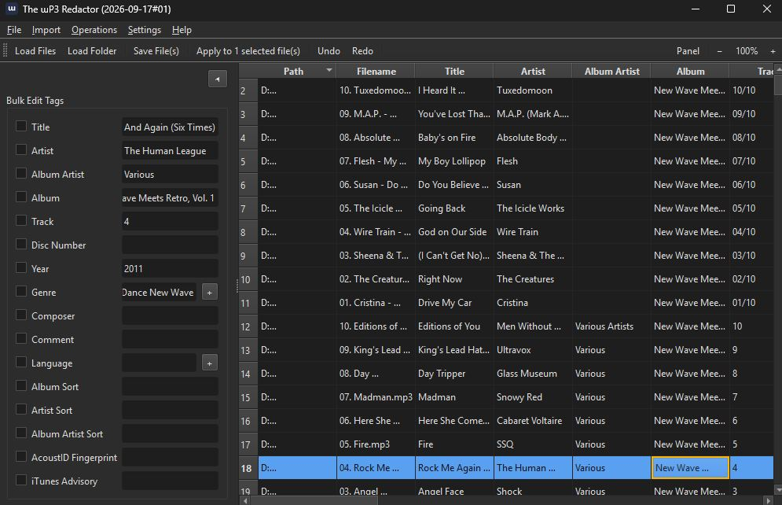

The ɯP3 Redactor
A free Windows and Linux utility for bulk-checking and bulk-editing MP3 metadata, mp3tag-inspired.

What it does
Load a folder of MP3s into a sortable table, select any number of them, and run checks or edits across the whole selection at once — the same batch-first workflow as the rest of the Redactor family.
Features
- File integrity check via
mp3val, plus a Deep Check Integrity pass that does a real full decode, catching corrupt or truncated audio a header-only scan can miss. - BPM detection (in-process, via
aubio) and musical key detection (viakeyfinder-cli, run concurrently across files for a large speedup on multi-core machines). - Bulk tag editing — Title/Artist/Album Artist/Album/Track/Disc/Year/Genre/Composer/Comment/Language via a tag panel, undoable, with Genre/Language quick-pick lists and fully manageable columns.
- Cover art — a Cover column with thumbnails and a preview in the side panel. Set a cover from an image file, or from each file's own
cover.jpg/folder.jpgso a selection spanning several albums gets each album's art at once. Remove or export covers too. - MusicBrainz lookup — finds the release each folder belongs to (one album per folder) and matches every file to its track: title, artist, album artist, album, track, disc, year and the MusicBrainz Album/Track IDs, the way MusicBrainz Picard writes them. Other editions are offered too, and every change goes through the per-field overwrite review. With the free
fpcalctool it also identifies songs by their sound (AcoustID fingerprints), so even a folder of tagless "Track 01" files is found. - Lyrics — fetch lyrics from LRCLIB (free, no API key) for one file or a whole selection, and edit them in a dedicated lyrics editor. Saved as a standard ID3v2 lyrics frame.
- Measure Loudness — single-pass
loudnormmeasurement written as a standard ReplayGain tag, picked up by any ReplayGain-aware player. - Import & Convert to MP3 — brings FLAC/WAV/OGG/M4A and other formats into the library via
libmp3lameat a chosen bitrate. - Rename / Export / Move and Parse Filename → Metadata, pattern-based (
%track% - %artist% - %title%by default) and previewed before committing. An optional ASCII-safe filenames option turns accented letters and typographic punctuation into plain ASCII (é→e, æ→ae, ß→ss). Renames can be taken back with File > Undo Last Rename, even after a restart. - Quick single-file rename by double-clicking a filename, without the full pattern tool.
Redact, and everything since
Everything below is in the current release. Redact is the one-click path; the individual tools above remain available.
Redact steps: integrity check (mp3val) and fix what it can, BPM, key, loudness (ReplayGain), fill empty tags from the folder path, fill missing tags from MusicBrainz / AcoustID, fill empty tags from Discogs (only when a token is stored), and add a missing cover (folder image, or the Cover Art Archive). Existing tag values are never replaced unless the recipe says so. Optional, off by default: Deep Check (slow), rename by pattern (on once you have used Rename / Export) and move into library folders. Each new file is verified (it opens, same audio length, tags read back) before it replaces the original.
- Redact: one click on the toolbar (or Edit > Redact, Ctrl+Shift+E) runs an editable recipe of steps on the selected files, or on all loaded files after asking. Each changed file is saved in place and its original goes to the Recycle Bin, so the Recycle Bin is the undo. Guesses are applied only at or above a confidence threshold (90% by default); weaker ones are listed under Needs review and never written. Files with unsaved edits or that failed to load are skipped and named in the report. A saved recipe keeps the patterns it was saved with (the editor shows a pattern trail of where each pattern comes from), so changing the Rename / Export pattern later does not silently change what Redact does.
- Move into folders: Rename / Export / Move has a third mode that files each item into a folder tree under a library root, using a pattern with
/in it. The preview shows each new path, nothing is overwritten (a taken name gets “(2)”), and File > Undo Last Rename puts everything back and offers to remove the folders the move created. - Metadata from the folder path: Parse Filename also reads folders. A pattern containing
/is matched against the file name and the folders above it, counted from your library root, with a confidence shown per file. Redact has a matching step that fills only empty fields. - Export / Import Settings (File menu): your recipe, pattern history, column layout and defaults in one JSON file for a new install or a second computer. Import shows every change before applying anything. Passwords, API keys and tokens are never included; tool paths and folders are offered unticked as “this computer only”.
- Command palette (Ctrl+K): type part of any menu command to find and run it. The menus follow one layout in all four apps: File, Edit, View, Metadata, Analyze, Tools, Help. Open in Default App is in the right-click menu, and Ctrl+S saves every changed file (Save All).
- Discogs lookup (Metadata > Look Up > Discogs, also in the right-click menu): finds the release each folder belongs to, shows its cover next to yours, lists other pressings (label, catalogue number, year, country) and sends every change through the per-field overwrite review. It needs your own free Discogs token (Tools > API Keys), stored in your operating system’s credential store, never in the settings file or a log. Publisher (label), Catalog Number and Release Country are editable fields, hidden in the table until you show them.
- Scan results stay in the file: Integrity and Deep Check results are saved inside the MP3 as ID3 frames (
REDACTOR_INTEGRITYandREDACTOR_DEEP_CHECK: the result and a UTC timestamp), written when you Save, so the record survives copying. The columns showOK · date time; files never scanned still say UNCHECKED. - A failed tool is not a bad file: if mp3val or ffmpeg times out, crashes or cannot start, the status is TOOL ERROR (shown in orange), nothing is stamped and nothing is “fixed”.
- Search and Replace (Ctrl+H) and Change Case work on the selected files in memory (Undo reverts, Save writes), and Remove from List drops files from the list without touching them on disk.
- Saving no longer damages tags: only the fields you changed are rewritten, multi-valued frames are kept, the file’s ID3v2.3 or v2.4 version is kept, and the write goes through a temporary copy that replaces the file.
Requirements
Two downloads on each release: a standalone .exe for Windows, and mp3redactor-linux-x86_64.tar.gz for 64-bit Linux (Ubuntu 22.04+, Debian 12+, Fedora 36+, Mint 21+ and the like — unpack and run; settings live in ~/.config/mp3redactor/). No separate Python install needed on either. Deep integrity checks, loudness measurement, and format conversion use ffmpeg; key detection uses keyfinder-cli — on Windows a small companion binary from keyfinder-cli-windows (no prebuilt Windows build exists upstream, so it's built and shipped separately), on Linux the upstream keyfinder-cli on your PATH. The app never downloads or bundles these tools; point it at them with Tools > External Tools... if they aren't on PATH. Full details and the changelog are in the GitHub repository.
The rest of the family
The ɯP3 Redactor shares its UI and core editing patterns with three sibling tools, via redactor_common:
 The ƆBZ Redactor
The ƆBZ Redactor The ƎPUB Redactor
The ƎPUB Redactor The Ʌideo Redactor
The Ʌideo Redactor